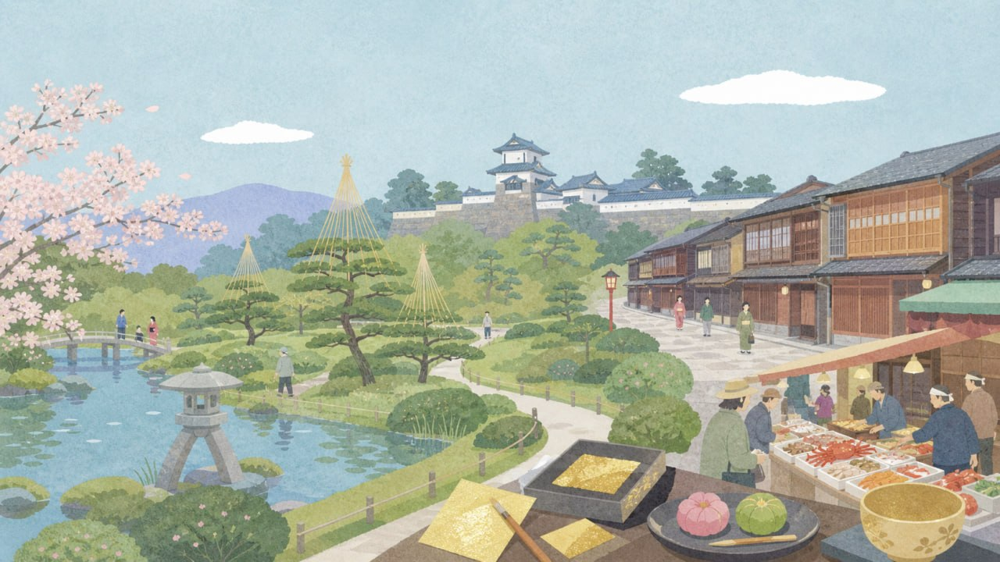
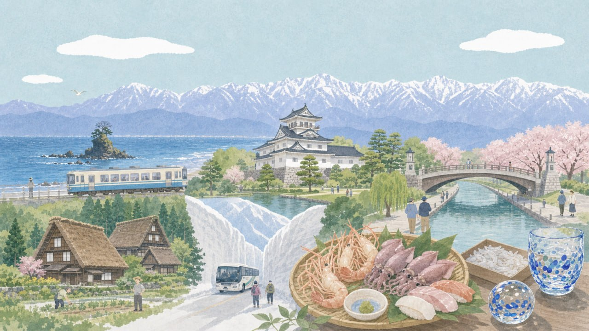
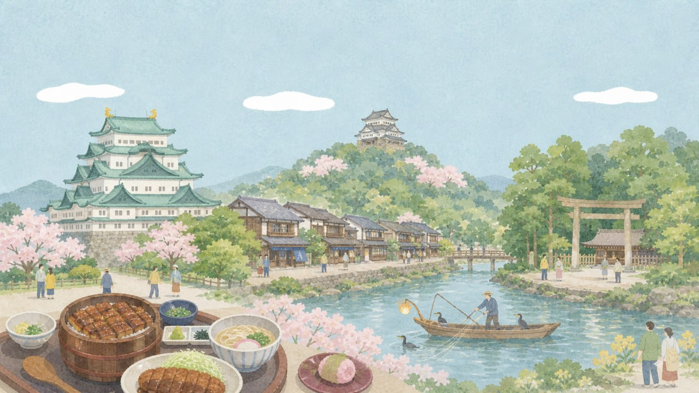
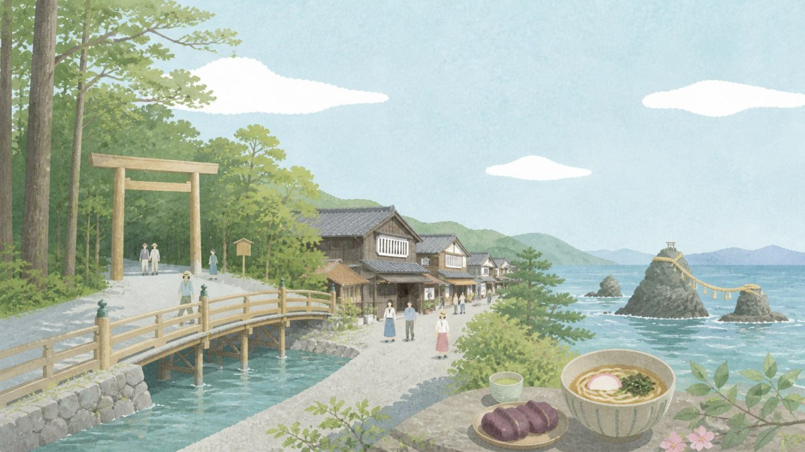

金澤、富山、名古屋、伊勢
四座城市的攝影記憶 — 經典與私房景點、最佳時段、鏡頭建議
加賀百萬石的雅緻 — 庭園、茶屋、海鮮與職人文化

金澤是日本保存最完整的江戶城下町之一。兼六園的四季、東茶屋街的木造連檐、近江町市場的色彩、犀川大橋的夕景 — 每一步都是構圖。雨天尤其迷人，石板路倒映著茶屋暖簾，是街拍的天堂。
日本三名園之一。徽軒燈籠與霞池的經典構圖、冬季雪吊絕景。
金澤最具代表性的木造茶屋街。格子窗與暖簾的連續韻律。
妹島和世設計的圓形美術館。「泳池」裝置是必拍經典。
「金澤的廚房」280 年歷史。鮮豔海鮮、蔬果、職人手作，色彩爆棚。
犀川與淺野川交匯處。黃昏河面倒映天色，遠山層次分明。
比東茶屋街更安靜道地的茶屋街。紅殻格子與小橋流水。
金澤市區制高點。可一望市街地與日本海，夕景到夜景的連續拍攝絕佳。
日本初の和洋折衷神門。五色ステンドグラスが幻想的な光を放つ。
金澤城公園內的回遊式大名庭園。兼六園に匹敵する美しさ、人少穴場。
江戶時代武家屋敷が残る情緒あふれる街並み。土壁と石畳の質感。
金澤駅のシンボル。和の意匠と現代建築の融合。夜間ライトアップ。
禪思想家・鈴木大拙を記念した建築。「水鏡の庭」が哲學的空間美。
全国で最も美しい圖書館の一つ。白壁に無數の四角い窓が並ぶ外觀。
復元された城郭建築。白壁と鉛瓦のコントラストが美しい。
立山連峰與富山灣之間 — 海山一線的壯闘與寧靜

富山是日本唯一「在市區就能同時拍到 3,000m 級山稜與海平面」的城市。雨晴海岸的立山連峰倒映、環水公園的夕陽、庄川峽的翠綠深谷 — 無需上山，平地即絕景。5 月中旬新綠正盛，是風景攝影的黃金期。
日本最美海岸之一。晴天可同框拍攝立山連峰、富山灣與海岸線。
富山灣面向日落方向的臨海公園。天橋、運河、夕陽構成絕佳構圖。
翠綠溪谷中的遊覽船之旅。峽谷垂直岩壁與濃綠植被壯闊畫面。
五箇山地區特有的散居村落。農舍散布田園中，背景立山連峰。
2017 年開幕。內藤廣建築設計，頂樓可望見立山連峰的露台。
富山市區制高點。天氣好時可俯瞰全市，遠眺立山連峰。
富山市中心を流れる松川沿い。春は桜並木、夜は屋台燈りが風情。
日本海側最大の斜張橋と優雅な帆船「海王丸」の組み合わせ。
富山湾に沈む夕日がオレンジに染めるマジックアワー。春はホタルイカの青い發光。
地上 70m 的免費展望台。立山連峰パノラマが一望。
北前船で栄えた港町の面影。白壁の蔵と石畳の路地がノスタルジック。
隈研吾設計の建築内にあるガラス美術館。繊細な作品と建築空間。
「日本の夕日百選」に選ばれた夕景スポット。巨大な夕日と漁師町のシルエット。
標高 600m から 360度パノラマ。立山連峰〜富山平野〜日本海の大展望。
日本最深 V 字峽谷中的溫泉町。復古トロッコ電車穿越溪谷，四季絕景。
城郭、古道、川町 — 從都市到歷史的攝影散步

名古屋是日本第三大都會，但真正的攝影寶藏在外圍：犬山有日本最古老的木造天守、岐阜有長良川的鸕鶿漁與金華山纜車夜景、郡上八幡的水路古鎮。一小時車程內，從現代建築跳到江戶水鄉。
日本三大名城之一。金鯱是名古屋象徵。本丸御殿障壁畫值得細拍。
日本現存最古老的木造天守。座落木曾川畔，有「白帝城」之稱。
山頂天守閣。纜車可俯瞰岐阜市區與長良川全景。夜景著名。
1300 年歷史傳統漁法。夜間篝火照亮河面、鸕鶿潛水動態畫面。
岐阜山間水路古鎮。清澈水渠貫穿街道，老屋倒映水面，有「小京都」之稱。
名古屋市中心的日本庭園。尾張德川家別邸遺址，池塘瀑布造景精美。
日本三大神社之一。供奉草薙劍（三神器之一）。境內古木參天，參道莊嚴。
名古屋最具活力的商店街。觀音寺本堂朱紅莊嚴，商店街古今交錯。
名古屋地標。玻璃屋頂的「水之宇宙船」漂浮在空中，幾何結構獨特。
名古屋最高建築的屋外展望台。開放感極強，無玻璃阻隔，270° 環景。
百年陶瓷品牌園區。紅磚煙囪、窯爐遺跡與白色陶器展示，工業遺產美學。
位於栄的愛知藝術文化中心內。建築本身就是幾何攝影題材，常設展有毕卡索、雷諾瓦。
日本最大級水族館。殺人鯨、海豚表演壯觀。港區「藍色列車」是拍照打卡點。
名古屋最大的日本庭園。位於名古屋城附近，以心字池為中心的回遊式庭園。
犬山城腳下的古町並。白壁土藏與木曾川的昔日風情。
1300 年歷史的鸕鶿捕魚文化。篝火映照河面的夢幻場景。
日本歷史轉折之地。中山道宿場町保留江戶風情，石疊老街適合紀實攝影。
電影《你的名字》取景地。白壁土藏與瀨戶川的鯉魚、圓窗寺的靜謐。
日本的精神故鄉 — 神宮、參道、海女與二見浦

伊勢神宮是日本最重要的神社，每 20 年一次的式年遷宮造就了永恆的建築美學。おかげ横丁的江戶風情、二見浦夫婦岩的日出、鳥羽的海女文化 — 這裡拍的是「日本的根源」。莊嚴、純淨、安靜。
正式名稱「豐受大神宮」。供奉食物與產業之神。境內古木參天。
正式名稱「皇大神宮」。天照大御神鎮座之所。五十鈴川清流與宇治橋。
內宮門前的江戶風情商店街。重現明治時代伊勢路風景，赤福本店在此。
二座岩石以注連繩相連，日出從兩岩之間升起。5 月可見鑽石般的日出。
三重是日本海女文化中心。海女小屋體驗可近距離拍攝傳統白色磯着。
西班牙風情度假村。白色建築、藍色裝飾、水路運河，意外地在伊勢志摩。
參拜伊勢神宮前的潔淨之社。夫婦岩之間升起朝陽的奇景，攝影師必拍。
內宮門前的江戶風情商店街。木造町屋、赤福手作、路邊小吃，紀實攝影寶庫。
伊勢神宮別宮中最神秘的一宮。御田植祭是國家重要無形民俗文化財。
日本最大級水族館。海女文化體驗可近距離拍攝傳統潛水捕撈。
英虞灣展望台。裏亞式海岸的複雜地形從上方俯瞰，被譽為「日本三大夕景」。
志摩半島的海濱度假設施。英虞灣夕景與松林步道，日式度假攝影。
伊勢信仰的起點神社。天狗傳說發源地，境内杉木古樹與注連繩充滿神秘感。
伊勢參宮的物流中心。白壁藏屋與運河交錯的商人町，比おかげ横丁更安靜。